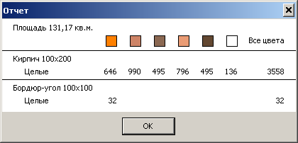
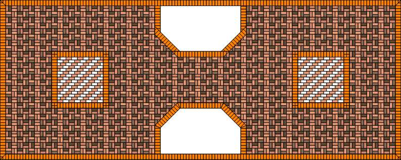
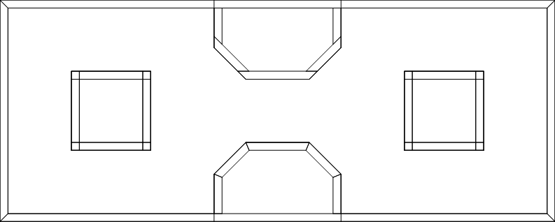
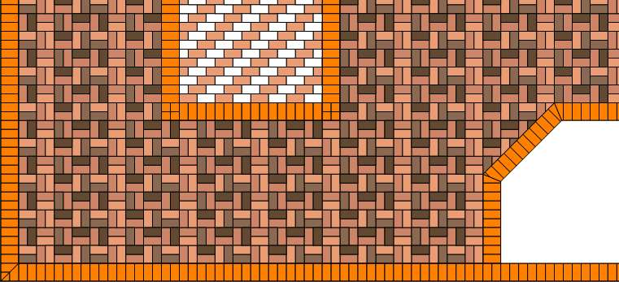

Проектировщик тротуарной плитки 2.2
Финальная обработка рабочего проекта

Экспорт презентации
Зелёные газоны нарисовать в этой версии программы нельзя. Это можно сделать в Paint. А для этого нужно экспортировать рабочий проект в файл-картинку. Выбираем в главном меню редактора проектов Проекты > Экспортировать презентацию. Далее нужно указать имя файла, в который сохранится презентация нашего рабочего проекта. Сохранение проходит пока только в формате BMP.В зависимости от того, что вы будете дальше делать с этой картинкой, нужно перед экспортом установить масштаб в окне редактора проектов. Экспорт происходит в том же масштабе, в каком вы рассматриваете проект в редакторе проектов. Следовательно, если нужно разместить картинку на сайте, то можно установить масштаб помельче. А если нужно напечатать на плоттере на формате А2, то понадобится масштаб покрупнее.
Отчёт по рабочему проекту
Про отчёт подробно рассказано в справочном руководстве. Здесь остановимся на том, что касается нескольких проектов на одном чертеже и клонах проектов.
Во-первых, отчёт строится суммарно по всем проектам, которые входят в набор. Как видите, плитки белого цвета встречаются только в квадратах, а оранжево-коричневые - только в окантовках. Тем не менее, в отчёте они перечислены наряду с плитками внутреннего пространства. Напротив, плитки светлого кофейно-молочного цвета входят и во внутреннее пространство, и в квадраты. В отчёте же они указаны в общем количестве - 796.
Во-вторых, плитки клонов учитываются так, как если бы они были не клонами, а "настоящими" проектами. То есть к количеству плиток в проекте-оригинале добавляется количество плиток во всех его клонах. Можете пересчитать количество белых плиток в обоих квадратах. В первом их 68. Второй - его клон. Итого белых плиток - 136 шт.
Ещё замечание по отчёту. Общая площадь. Это общая площадь всех проектов набора - внутреннего пространства, квадратов, окантовок - и их клонов. В отчёте показана площадь 131,17 кв.м. Странное число, учитывая, что размеры рабочего проекта 14 м × 5,6 м, итого 78,4 кв.м. Откуда 131,17? Это число включает в себя площадь проекта "макет", который по сути не является частью рабочего проекта. Поэтому перед просмотром отчёта нужно удалить из набора проектов всё лишнее. Удаляем проект "макет" и снова смотрим отчёт. Теперь площадь равна 70,37 кв.м. Это и есть сумма площадей всех проектов набора - площадь прямоугольника 14 × 5,6 минус площадь обоих газонов.
Печать проекта
Как описано в справочном руководстве, можно напечатать:


По умолчанию печатаются все проекты набора. Это можно отключить в окне опций печати. Тогда будет напечатан только активный проект набора.